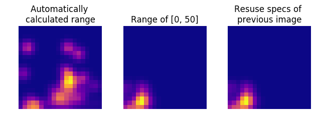

Persistence Images¶
Persistence Images were first introduced in Adams et al, 2017. Much of this work, an examples contained herein are inspired by the work of Obayashi and Hiraoka, 2017. Choices of weightings and general methods are often derived from Kusano, Fukumizu, and Yasuaki Hiraoka, 2016.
[1]:
from itertools import product
import numpy as np
from sklearn import datasets
from scipy.stats import multivariate_normal as mvn
import matplotlib.pyplot as plt
from ripser import Rips
from persim import PersImage
Generate persistence diagram using Ripser¶
[2]:
# lots of random noise and 2 circles
data = np.concatenate([150 * np.random.random((300,2)),
10 + 10 * datasets.make_circles(n_samples=100)[0],
100 + 20 * datasets.make_circles(n_samples=100)[0]])
rips = Rips()
dgms = rips.fit_transform(data)
plt.figure(figsize=(10,5))
plt.subplot(121)
plt.scatter(data[:,0], data[:,1], s=4)
plt.title("Scatter plot of noisy data with some circles")
plt.subplot(122)
rips.plot(dgms, legend=False, show=False)
plt.title("Persistence diagram of $H_0$ and $H_1$")
plt.show()
Rips(maxdim=1, thresh=inf, coeff=2, do_cocycles=False, verbose=True)

Persistence Images with various pixels¶
[3]:
pim = PersImage(spread=1, pixels=[10,10], verbose=False)
img = pim.transform(dgms[1])
ax = plt.subplot(131)
plt.title("PI for $H_1$\nwith 10x10 pixels")
pim.show(img, ax)
pim = PersImage(spread=1, pixels=[50,50], verbose=False)
img = pim.transform(dgms[1])
ax = plt.subplot(132)
plt.title("PI for $H_1$\nwith 50x50 pixels")
pim.show(img, ax)
pim = PersImage(spread=1, pixels=[100,100], verbose=False)
img = pim.transform(dgms[1])
ax = plt.subplot(133)
plt.title("PI for $H_1$\nwith 100x100 pixels")
pim.show(img, ax)
plt.tight_layout()

Various levels of spread¶
Spread determines the standard deviate of the Gaussian kernel used.
[4]:
pim = PersImage(spread=0.5, verbose=False)
img = pim.transform(dgms[1])
ax = plt.subplot(131)
plt.title("PI for $H_1$\nSpread=0.5")
pim.show(img, ax)
pim = PersImage(spread=1, verbose=False)
img = pim.transform(dgms[1])
ax = plt.subplot(132)
plt.title("PI for $H_1$\nSpread=1")
pim.show(img, ax)
pim = PersImage(spread=2, verbose=False)
img = pim.transform(dgms[1])
ax = plt.subplot(133)
plt.title("PI for $H_1$\nSpread=2")
pim.show(img, ax)
plt.tight_layout()

Particular ranges¶
Say you want to directly compare a new set of persistence images with an older set. You can specify the range of the grid using the specs parameter.
To access the specs of another PersImage object, either automatically generated or defined, you can read the .specs attribute. This is shown below.
[5]:
pim1 = PersImage(verbose=False)
img1 = pim1.transform(dgms[1])
pim2 = PersImage(specs={"minBD": 0, "maxBD": 50}, verbose=False)
img2 = pim2.transform(dgms[1])
# Use calculated specs from previous image
specs2 = pim2.specs
pim3 = PersImage(specs=specs2, verbose=False)
img3 = pim3.transform(dgms[1])
ax = plt.subplot(131)
plt.title("Automatically \ncalculated range")
pim.show(img1, ax)
ax = plt.subplot(132)
plt.title("Range of [0, 50]")
pim.show(img2, ax)
ax = plt.subplot(133)
plt.title("Resuse specs of \nprevious image")
pim.show(img3, ax)
plt.tight_layout()

[ ]: